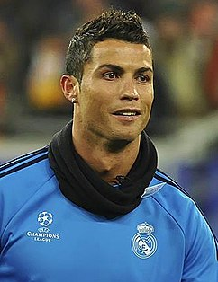

Cristiano Ronaldo dos Santos Aveiro GOIH, ComM (European Portuguese: [kɾiʃˈtjɐnu ʁoˈnaɫdu]; born 5 February 1985) is a Portuguese professional footballer who plays as a forward for Spanish club Real Madrid and the Portugal national team. Often considered the best player in the world and widely regarded as one of the greatest of all time,[note 1] Ronaldo has five Ballon d'Or awards,[note 2] the most for a European player and is tied for most all-time. He is the first player in history to win four European Golden Shoes. He has won 25 trophies in his career, including five league titles, four UEFA Champions League titles and one UEFA European Championship. A prolific goalscorer, Ronaldo holds the records for most official goals scored in the top five European leagues (387), the UEFA Champions League (117), the UEFA European Championship (29) and the FIFA Club World Cup (7), as well as most goals scored in a UEFA Champions League season (17). He has scored more than 600 senior career goals for club and country.
